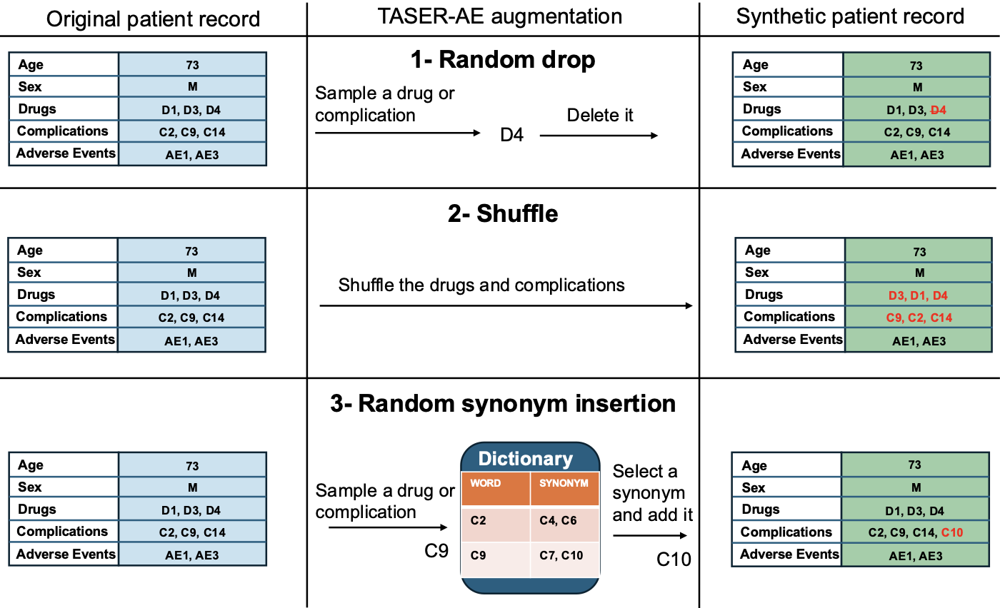

Gün Kaynar, Z You, RD Boyce, T Yakoh, C Kingsford
medRxiv, 2026
Adverse events (AEs) resulting from medical interventions are significant contributors to patient morbidity, mortality, and healthcare costs. Prediction of these events using electronic health records (EHRs) can facilitate timely clinical interventions. However, effective prediction remains challenging due to severe class imbalance, missing labels, and the complexity of EHR records. Classical machine learning approaches frequently underperform due to insufficient representation of minority adverse event classes and limited capacity to capture interactions among patient demographics, administered medications, and associated complications. We introduce TASER-AE, a novel data augmentation pipeline tailored for structured EHR data, coupled with transformer-based classification. TASER-AE addresses these issues through an NLP-inspired data augmentation framework adapted for EHR, enabling effective minority-class representation in sparse and imbalanced clinical datasets. The augmented records produced by TASER-AE alleviate class imbalance by enriching the representation of minority adverse event classes, which enhances the robustness and predictive performance of the classifier. TASER-AE yields minority-class F1 scores up to 0.70, substantially surpassing classical machine-learning baselines and prior augmentation methods across multiple adverse event tasks. Experiments conducted on two distinct EHR datasets confirm TASER-AE's ability to substantially improve adverse event detection performance. These results demonstrate the potential of structured, NLP-inspired augmentation methods to overcome data limitations in clinical predictive modeling, ultimately contributing to improved patient safety outcomes.
